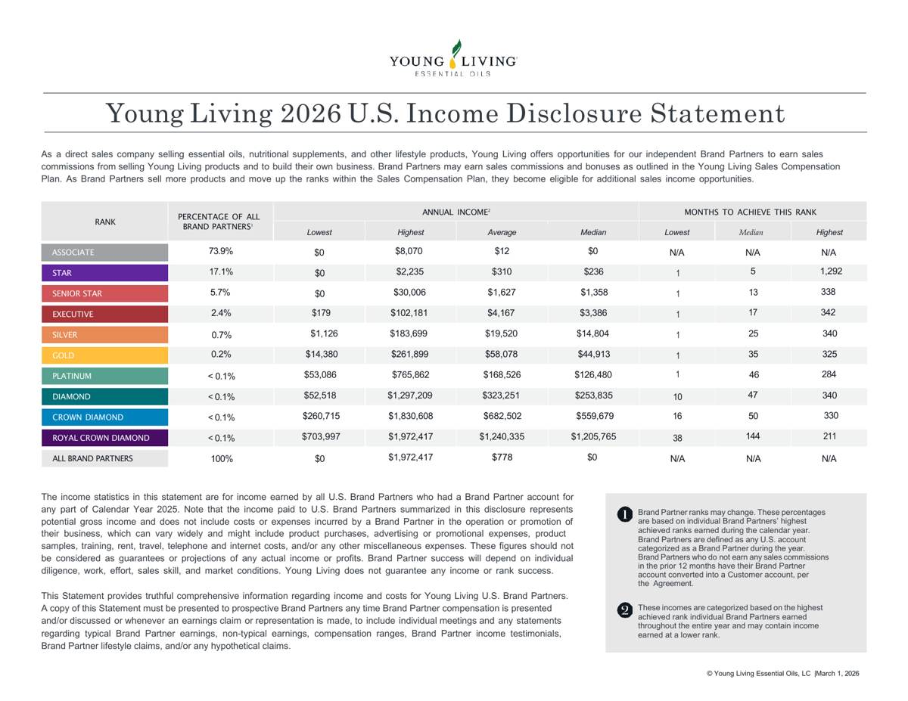

Starting Point
Not a business owner? Start here.
What else is possible?
You work hard. You do what needs to be done. You take care of the people who depend on you, pay the bills, manage the schedule, get through the week and then get up and do it all again.
But your life may not look the way you thought it would.
You could be exhausted from working so much that there is very little of you left when you get home. You could be tired of living for the weekend, only to spend Saturday catching up on everything you couldn’t get done during the week.
You tell yourself you’ll exercise when you have more time. You’ll travel when work slows down. You’ll spend more time with the people you love when things aren’t so busy. You’ll do more with your children next summer.
You keep thinking there will be more time later. But the weeks turn into months, the kids get older, and another summer ends with things you meant to do together still sitting on the list.
The life you’re working so hard to support is becoming the life you don’t have enough time to live.
Or life may have changed without asking your permission.
A divorce, the end of a relationship, a job loss, a career change, the loss of an income you depended on, a move, or a responsibility you never expected to carry alone can leave you standing in a life that looks nothing like the one you had planned.
Now you’re trying to figure out what comes next while you’re still trying to make sense of what just happened.
There can be so much to carry when life changes unexpectedly. Decisions that used to be shared may now be yours alone. Things you never had to think about before suddenly matter. And you’re trying to navigate all of it while you’re still healing, rebuilding your confidence and figuring out who you are in a life that has dramatically changed.
How do I heal through a difficult season and still build what comes next?
You don’t need to know the answer yet. But you do need to know that the life you have right now is not the only life available to you.
At some point, something has to move you from thinking about change to beginning it.
I’m ready to begin. I’m ready to do something different.
You don’t have to have everything figured out. You don’t need to know exactly where this will lead.
That’s a perfectly good place to begin.
Why I created Starting Point
There was a time when my own life changed dramatically, and I had to figure out what came next.
I had been a stay-at-home mom for many years, and suddenly I needed to create financial stability for myself and my children. I could have gone back to a traditional 9-to-5 job. There is nothing wrong with that path, but I knew what mattered to me.
I wanted to remain present for my children.
Their lives had changed too. I didn’t want rebuilding our life to mean they lost the version of me who had always been there. I still wanted to pick them up from school, volunteer, be there for the important moments and have time for the ordinary ones.
How can I build the life we need without giving up the life that matters to me?
I began exploring. I asked questions, researched possibilities, developed new skills and tried different ways of working and earning. Over time, I paid down debt, rebuilt my credit and created greater stability.
But one of the things I am most proud of isn’t financial.
I was there.
I built a life that allowed me to provide for my family and still be present for my children.
I didn’t know exactly what the path would look like when I started. I simply became willing to ask:
What else is possible?
That’s why I created Starting Point.
I wanted more than one way to earn.
Going through such a major change affected the way I thought about income. I knew what it felt like to have a source of income I had depended on suddenly no longer be there, and I didn’t want to put myself in a position where my entire financial life depended on one source again.
So part of rebuilding my life meant exploring different ways to earn.
That didn’t mean I needed to do everything at once, and it didn’t mean every opportunity I looked at was right for me. I wanted options. I wanted to know that if one thing changed, there were other things I had already begun building.
Over the years, that has looked different at different times. I’ve worked traditional jobs. I’ve done contract work. I’ve built businesses. I’ve used skills I already had in new ways, developed skills I didn’t have before, and explored opportunities I probably wouldn’t have considered earlier in my life.
I didn’t build one answer. I built options.
And if having more than one source of income is something you’ve thought about, this can be a place to begin exploring that idea for yourself.
You don’t need to copy what I did. Your skills are different. Your circumstances are different. What matters to you may be completely different.
The question is still the same:
What else is possible for you?
One of the things I explored
One of the things I started thinking about was what I was already spending money on.
There were things I had to buy for my household anyway. Laundry detergent. Household products. Things my family used all the time. I started paying more attention to what I was buying, what I liked and what I felt comfortable having in my home, around my family and my pets.
That’s part of what led me to Young Living.
I wasn’t looking to become a salesperson. I didn’t want to host parties or spend my time trying to convince people to buy something. I found products I enjoyed using, and sharing something I genuinely liked felt natural to me.
I thought about it the same way I think about reviews. I read reviews before I buy things because I want to know what other people experienced. And when I find something I genuinely like, I tell people about it.
Young Living was one of the things I came across during that season of exploring. I became curious about it, did my own research and eventually decided there were parts of it that made sense for me.
It doesn’t have to become part of your story.
But there is another reason I’m including it here.
I want to give you a real example of something I once knew very little about and decided to investigate for myself.
That’s something I want Starting Point to encourage you to do. When you come across an idea, a company or an opportunity that interests you, don’t rely only on the person telling you about it. Go to the source. Read. Ask questions. Look for information that challenges what you’ve already heard. Pay attention to what you understand and what you still need to learn.
Research It for Yourself
Here is one of the documents I would want you to look at.
Young Living 2026 U.S. Income Disclosure Statement
Before deciding what you think about an opportunity, look beyond someone’s personal experience. What does the company’s own information tell you?

The complete one-page disclosure is shown here. Select the document to open it full size.
The 2026 U.S. Income Disclosure Statement is dated March 1, 2026 and reports U.S. Brand Partner results for calendar year 2025. It explains that the income shown is potential gross income before business costs and expenses and that the figures are not guarantees or projections of actual income or profit.
What stands out to you?
What questions does it raise?
Does anything you learned change the way you think about the opportunity?
You may research something and decide, this isn’t for me.
Good.
That isn’t a failed exercise. You learned something. You asked questions. You looked beyond someone else’s opinion and gathered enough information to begin forming your own.
Or your research may lead to another question, another idea or something you never would have considered before.
That’s the point.
Young Living isn’t the answer I’m giving you. It’s simply one example from my own life of what can happen when you become willing to explore.
If you've done your research and Young Living is something you'd like to explore further, you can use my referral link here.
Explore Young LivingThis is my personal Young Living referral link. If you choose to purchase or enroll through it, I may receive compensation as an Independent Brand Partner. There is no obligation to use my link.
Starting Point Entry Session
You don’t have to figure out what comes next by yourself.
You may have read through Starting Point and recognized yourself somewhere in these words.
You know you want something to be different. You may even have a few ideas about what that could look like. Or you may have no idea yet. You simply know you’re ready to begin.
Sometimes it helps to have someone sit down with you and look at the whole picture.
That’s what the Starting Point Entry Session is for.
It’s a private 90-minute conversation where we look at what is happening in your life right now, what you want to be different, what matters enough that you don’t want to sacrifice it, and what you may already have to work with.
Before we meet, I’ll send you a short questionnaire. Your answers give me an opportunity to understand more about you before we sit down together, so our time can be spent looking beyond the possibilities you’ve already considered.
I’m not there to decide what your life should look like.
I’m there to help you see more of what could be possible.
You may leave with an idea you want to pursue, a few possibilities you want to investigate, or simply a much clearer understanding of what deserves your attention next.
You don’t have to walk in knowing the answer. That’s why it’s called Starting Point.
Ready to begin? Select Start Here to send me a short introduction. Once I receive it, I’ll be in touch with the next steps for your Starting Point Entry Session.
Start HerePrivate support for what comes next
You’ve spent enough time thinking about change. Now you get to decide how much support you want while you create it.
Some people need one thoughtful conversation to see possibilities they couldn’t see before. Some know what they want to work toward but want accountability and another perspective along the way. Others are ready to build something and need strategy before they begin.
You do not have to need the same amount of support as someone else. The right level depends on what you’re trying to change, how independently you want to work and how closely you want us to work together.
Guided Support
Private support, shaped around how closely you want to work together.
I keep this work intentionally personal. When we work together, I know what you’re working toward, what matters to you and what has been getting in the way. You aren’t entering a group program or being handed a standard formula.
You can do it yourself. That doesn’t always mean you should. Doing everything alone has a cost too. Sometimes that cost is time. Sometimes it’s energy. And sometimes we simply can’t see what we’re too close to see.
The right support doesn’t do the work for you. It helps you use your effort more intentionally.
You do the work. You don’t have to do all of it alone.
I work with a limited number of private clients at a time so the people I work with receive the attention this kind of work requires.
Monthly Guided Support
You know what you need to do. You just don’t want another month to pass without doing it.
This is for the person who can work independently but knows how easy it is for their own goals to get pushed behind work, family and everything else that needs their attention.
Once a month, we sit down together, look at what actually happened, talk through what got in the way and decide what deserves your attention next.
Your access: One private 60-minute session each month.
Between-session email support is not included. This engagement is designed for clients who are comfortable working independently between sessions.
Biweekly Guided Support
You’re moving forward, but you don’t want to lose momentum between one month and the next.
You’re actively working toward something, and there will be decisions, obstacles and moments when another perspective matters. Meeting every two weeks gives us enough proximity to what you’re doing to make adjustments while you’re still in it.
Your access: Two private 60-minute sessions each month, plus one brief email question per week about work we are already addressing together.
A brief email question means one focused question, not multiple or bundled questions. Questions requiring substantial review, research, new strategy, extensive feedback or a longer conversation are addressed during a scheduled session or may require a different level of support.
Weekly Guided Support
This is the season when you’ve decided this matters enough to give it consistent attention.
You aren’t looking for an occasional check-in. You’re actively building, changing or pursuing something and want a private place every week to think, make decisions, stay accountable and keep moving.
Your access: Four private 60-minute sessions each month, plus up to two brief email questions per week about work we are already addressing together.
This is the closest level of Guided Support, but it is not unlimited access. Substantial research, new strategy development, document review, business planning, extensive written feedback, unscheduled calls, or work completed for you between sessions is not included.
Your level of support determines your level of access. Email access is for brief questions related to work already underway. It does not include research, document review, new strategy development, extensive feedback, implementation, or work completed outside a scheduled session. If your needs change, we can determine whether a different level of engagement is more appropriate.
Starting Point Business Strategy
You’ve decided you want to start a business. Now you’re staring at everything that comes with that decision and wondering: What do I actually do first?
You don’t need a generic checklist or fifty things added to your list. You need to understand what your business requires and which steps make sense first.
This is private strategy work built around your idea, your goals, your circumstances and what you’re actually trying to create. I look at the business with you, then do the strategic work outside our meeting to develop your Personalized Starting Strategy—clear, actionable first steps in a sensible order for you to implement.
This is not a comprehensive business plan. The scope depends on the business and what is needed.
Between-session email support and implementation are not included. Additional strategy, ongoing support, review or implementation assistance can be scoped separately when appropriate.
The point isn’t simply to stay busy building something. It’s to keep sight of what you wanted the change to make possible in your life.
If you’re not sure which path fits what you need, the Starting Point Entry Session is designed to help you begin.
What else is possible?